Step 01
Posture 1: Standing (Qiyam)
Zoom
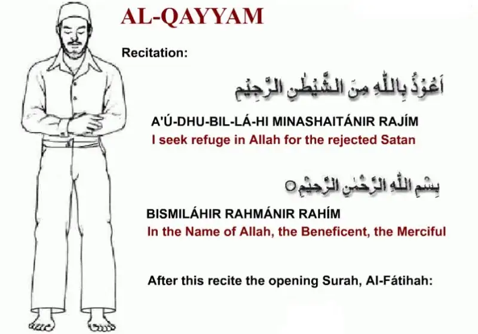
Master the correct method of Islamic prayer (Salah). Explore authentic body postures, essential Arabic recitations, Urdu meanings, and English translations taught through personal 1-to-1 live guidance.
Proper physical and spiritual preparation ensures your prayer is performed with sincerity, reverence, and purity.
Perform ablution (Wudu) ensuring face, hands, arms, head, and feet are thoroughly washed in the prescribed sunnah manner.
Ensure clothes and the prayer area are pure and clean from impurities, with proper Islamic dress code (Satr) covered.
Turn your body towards the direction of the Holy Ka'bah in Makkah with a quiet heart and focused intention.
Make a conscious, sincere intention in your heart for the specific prayer (Fajr, Zuhr, 'Asr, Maghrib, or 'Isha).
Explore the complete prayer sequence from opening Qiyam to concluding Tasleem. Click any instructional slide to inspect it in full high resolution with translations.

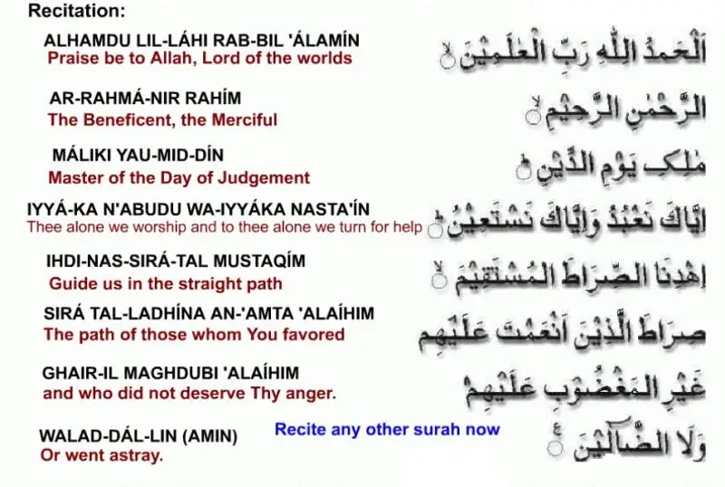
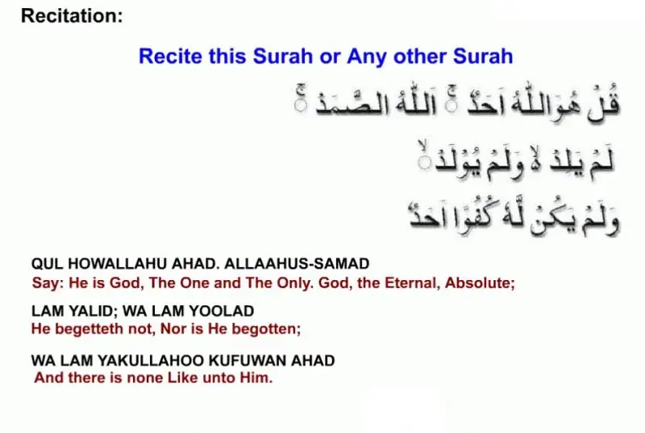
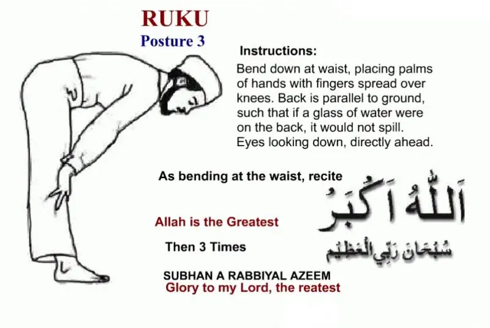
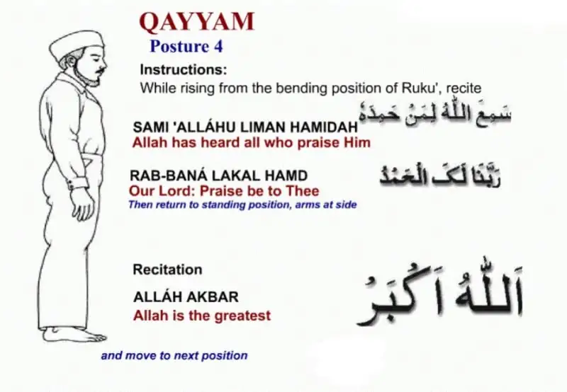
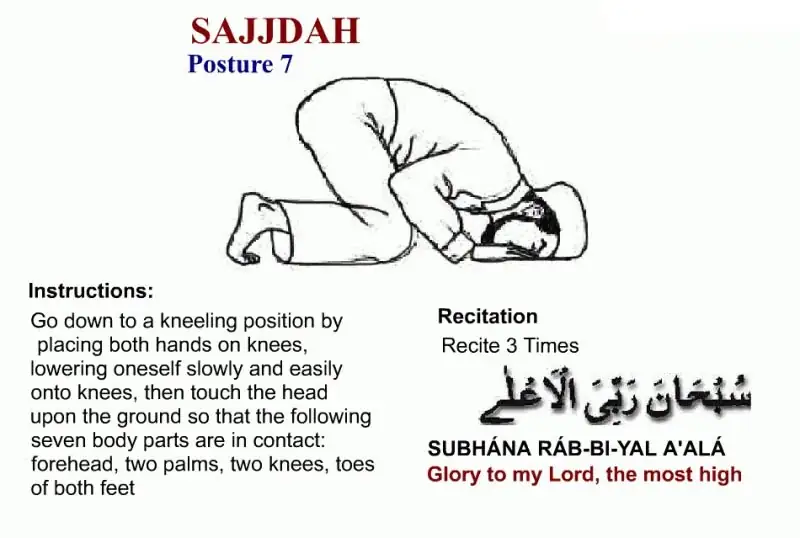
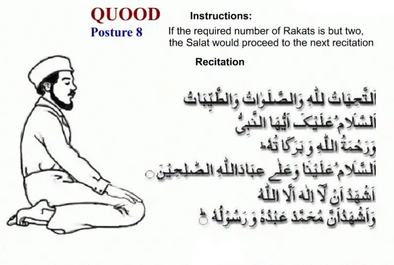
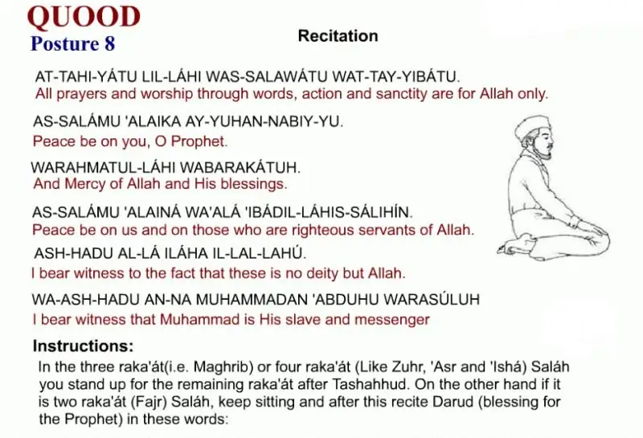
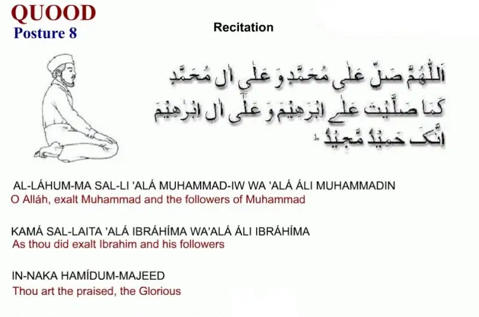
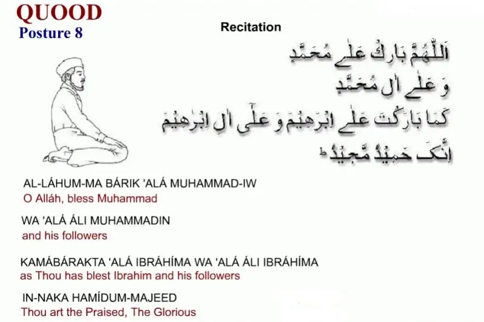
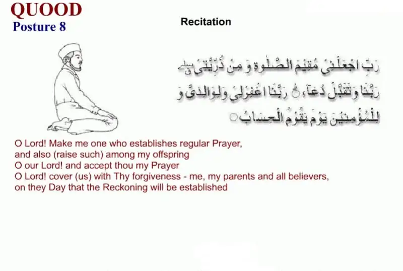
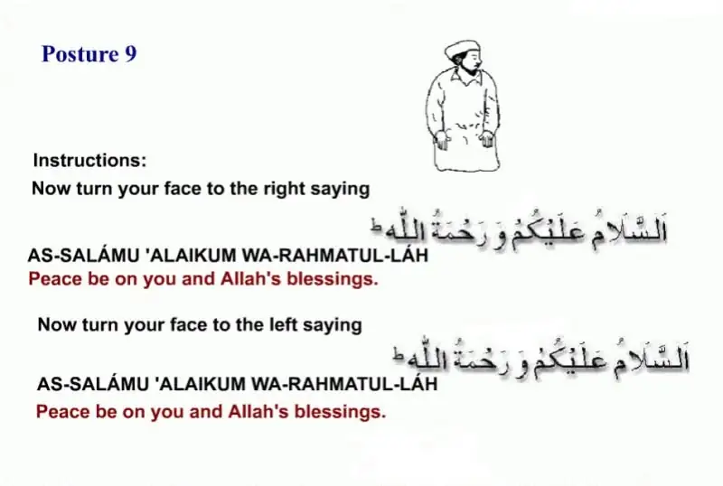
Our teachers ensure students achieve both physical correctness in prayer postures and spiritual connection in recitation.
Step-by-step guidance on finger placement in Ruku, ground contact points in Sajdah, and proper sitting alignments in Jalsa and Qa'dah.
Personalized correction of Surah Al-Fatihah, Tashahhud, Durood-e-Ibrahim, and Dua-e-Masura with clear Arabic phonetics.
Complete understanding of Sunnah, Fard, Witr, and Nafl units for each of the 5 daily prayers, plus Friday and Eid prayers.
Everything you need to know about our step-by-step prayer classes.
Children can be introduced to prayer postures and short recitations around age 6 to 7. By age 10, regular prayer routines and full memorization of Tashahhud and Durood become essential goals.
Yes. We offer discreet, private 1-on-1 sessions for adult reverts, beginners, and re-learners seeking to perfect their prayer methods, recitations, and meanings at their own comfortable pace.
Yes. Tutors teach the word-by-word meaning of Surah Al-Fatihah, Tashahhud, and prayer supplications in English or Urdu so learners feel genuine presence (Khushoo') during prayer.
Yes. Quran & Science has dedicated, experienced female instructors available for sisters, girls, and young children worldwide.
Yes. Our prayer curriculum covers the complete practical method of Wudu, sunnah etiquettes, conditions of purity, and factors that invalidate ablution.
Sign up for our 3-day free trial. Experience personalized one-to-one coaching on prayer movements, recitations, and daily supplications with experienced Quran teachers.